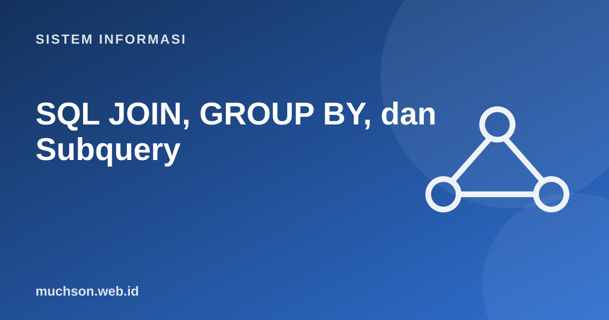

Beranda › Artikel › Sistem Informasi
Sistem InformasiSQL JOIN, GROUP BY, dan Subquery
Kekuatan basis data relasional ada pada menggabungkan tabel dan merangkum data. Materi ini memakai tiga tabel (mahasiswa, mata kuliah, KRS) dan memperlihatkan JOIN, agregasi, dan subquery lewat hasil nyata, termasuk jebakan yang membuat angka laporan salah tanpa terasa.
Sebaiknya sudah paham: SQL dasar, ERD

Tujuan belajar
Setelah membaca dan mencoba materi ini, Anda mampu:
- membedakan INNER JOIN dan LEFT JOIN serta menjelaskan hasilnya
- memakai GROUP BY dengan COUNT, SUM, AVG dan menyaring kelompok dengan HAVING
- menulis subquery dan CTE
- membedakan WHERE dan HAVING
- mengenali JOIN yang menggandakan baris dan menghasilkan agregat salah
Data latihan
import sqlite3
def basis_data():
db = sqlite3.connect(":memory:")
db.executescript("""
CREATE TABLE mahasiswa (nim TEXT PRIMARY KEY, nama TEXT, jurusan TEXT);
CREATE TABLE mata_kuliah (kode TEXT PRIMARY KEY, nama TEXT, sks INTEGER);
CREATE TABLE krs (nim TEXT, kode TEXT, nilai INTEGER, PRIMARY KEY (nim, kode));
INSERT INTO mahasiswa VALUES ('A01','Ani','SI'),('A02','Budi','TI'),('A03','Citra','SI'),('A04','Dewi','TI');
INSERT INTO mata_kuliah VALUES ('K1','Basis Data',3),('K2','Pemrograman',4),('K3','Jaringan',3),('K4','Statistika',2);
INSERT INTO krs VALUES ('A01','K1',90),('A01','K2',85),('A02','K1',70),('A02','K3',80),('A03','K2',95);
""")
return db
db = basis_data()
for t in ["mahasiswa", "mata_kuliah", "krs"]:
print(t, db.execute(f"SELECT * FROM {t}").fetchall())mahasiswa [('A01', 'Ani', 'SI'), ('A02', 'Budi', 'TI'), ('A03', 'Citra', 'SI'), ('A04', 'Dewi', 'TI')]
mata_kuliah [('K1', 'Basis Data', 3), ('K2', 'Pemrograman', 4), ('K3', 'Jaringan', 3), ('K4', 'Statistika', 2)]
krs [('A01', 'K1', 90), ('A01', 'K2', 85), ('A02', 'K1', 70), ('A02', 'K3', 80), ('A03', 'K2', 95)]
INNER JOIN vs LEFT JOIN
import sqlite3
db = sqlite3.connect(":memory:")
db.executescript("""
CREATE TABLE mahasiswa (nim TEXT PRIMARY KEY, nama TEXT, jurusan TEXT);
CREATE TABLE mata_kuliah (kode TEXT PRIMARY KEY, nama TEXT, sks INTEGER);
CREATE TABLE krs (nim TEXT, kode TEXT, nilai INTEGER, PRIMARY KEY (nim, kode));
INSERT INTO mahasiswa VALUES ('A01','Ani','SI'),('A02','Budi','TI'),('A03','Citra','SI'),('A04','Dewi','TI');
INSERT INTO mata_kuliah VALUES ('K1','Basis Data',3),('K2','Pemrograman',4),('K3','Jaringan',3),('K4','Statistika',2);
INSERT INTO krs VALUES ('A01','K1',90),('A01','K2',85),('A02','K1',70),('A02','K3',80),('A03','K2',95);
""")
def q(sql):
print(">", " ".join(sql.split()))
for r in db.execute(sql): print(" ", r)
q("""SELECT m.nama, mk.nama, k.nilai
FROM krs k JOIN mahasiswa m ON m.nim = k.nim JOIN mata_kuliah mk ON mk.kode = k.kode
ORDER BY m.nama, mk.nama""")
q("""SELECT m.nama, k.kode
FROM mahasiswa m LEFT JOIN krs k ON k.nim = m.nim
WHERE k.kode IS NULL""") # siapa yang belum mengambil apa pun?> SELECT m.nama, mk.nama, k.nilai FROM krs k JOIN mahasiswa m ON m.nim = k.nim JOIN mata_kuliah mk ON mk.kode = k.kode ORDER BY m.nama, mk.nama
('Ani', 'Basis Data', 90)
('Ani', 'Pemrograman', 85)
('Budi', 'Basis Data', 70)
('Budi', 'Jaringan', 80)
('Citra', 'Pemrograman', 95)
> SELECT m.nama, k.kode FROM mahasiswa m LEFT JOIN krs k ON k.nim = m.nim WHERE k.kode IS NULL
('Dewi', None)
GROUP BY dan agregasi
import sqlite3
db = sqlite3.connect(":memory:")
db.executescript("""
CREATE TABLE mahasiswa (nim TEXT PRIMARY KEY, nama TEXT, jurusan TEXT);
CREATE TABLE mata_kuliah (kode TEXT PRIMARY KEY, nama TEXT, sks INTEGER);
CREATE TABLE krs (nim TEXT, kode TEXT, nilai INTEGER, PRIMARY KEY (nim, kode));
INSERT INTO mahasiswa VALUES ('A01','Ani','SI'),('A02','Budi','TI'),('A03','Citra','SI'),('A04','Dewi','TI');
INSERT INTO mata_kuliah VALUES ('K1','Basis Data',3),('K2','Pemrograman',4),('K3','Jaringan',3),('K4','Statistika',2);
INSERT INTO krs VALUES ('A01','K1',90),('A01','K2',85),('A02','K1',70),('A02','K3',80),('A03','K2',95);
""")
def q(sql):
print(">", " ".join(sql.split()))
for r in db.execute(sql): print(" ", r)
q("""SELECT m.nama, COUNT(k.kode) AS jml_mk, ROUND(AVG(k.nilai),1) AS rata
FROM mahasiswa m LEFT JOIN krs k ON k.nim = m.nim
GROUP BY m.nim, m.nama ORDER BY rata DESC""")
q("""SELECT mk.nama, COUNT(*) AS peserta, MAX(k.nilai) AS tertinggi
FROM krs k JOIN mata_kuliah mk ON mk.kode = k.kode
GROUP BY mk.kode, mk.nama
HAVING COUNT(*) >= 2""") # HAVING menyaring KELOMPOK> SELECT m.nama, COUNT(k.kode) AS jml_mk, ROUND(AVG(k.nilai),1) AS rata FROM mahasiswa m LEFT JOIN krs k ON k.nim = m.nim GROUP BY m.nim, m.nama ORDER BY rata DESC
('Citra', 1, 95.0)
('Ani', 2, 87.5)
('Budi', 2, 75.0)
('Dewi', 0, None)
> SELECT mk.nama, COUNT(*) AS peserta, MAX(k.nilai) AS tertinggi FROM krs k JOIN mata_kuliah mk ON mk.kode = k.kode GROUP BY mk.kode, mk.nama HAVING COUNT(*) >= 2
('Basis Data', 2, 90)
('Pemrograman', 2, 95)
| WHERE | HAVING | |
|---|---|---|
| Menyaring | Baris, sebelum pengelompokan | Kelompok, sesudah agregasi |
| Boleh memakai agregat? | Tidak | Ya |
| Contoh | WHERE jurusan = 'SI' | HAVING COUNT(*) >= 2 |
Subquery dan CTE
import sqlite3
db = sqlite3.connect(":memory:")
db.executescript("""
CREATE TABLE mahasiswa (nim TEXT PRIMARY KEY, nama TEXT, jurusan TEXT);
CREATE TABLE krs (nim TEXT, kode TEXT, nilai INTEGER, PRIMARY KEY (nim, kode));
INSERT INTO mahasiswa VALUES ('A01','Ani','SI'),('A02','Budi','TI'),('A03','Citra','SI'),('A04','Dewi','TI');
INSERT INTO krs VALUES ('A01','K1',90),('A01','K2',85),('A02','K1',70),('A02','K3',80),('A03','K2',95);
""")
def q(sql):
print(">", " ".join(sql.split()))
for r in db.execute(sql): print(" ", r)
# subquery: nilai di atas rata-rata seluruh nilai
q("SELECT nim, kode, nilai FROM krs WHERE nilai > (SELECT AVG(nilai) FROM krs)")
# subquery dengan IN: mahasiswa yang punya nilai >= 90
q("SELECT nama FROM mahasiswa WHERE nim IN (SELECT nim FROM krs WHERE nilai >= 90)")
# CTE: langkah bernama agar query mudah dibaca
q("""WITH rata AS (SELECT nim, AVG(nilai) AS r FROM krs GROUP BY nim)
SELECT m.nama, ROUND(rata.r,1) FROM rata JOIN mahasiswa m USING (nim) WHERE rata.r >= 85""")> SELECT nim, kode, nilai FROM krs WHERE nilai > (SELECT AVG(nilai) FROM krs)
('A01', 'K1', 90)
('A01', 'K2', 85)
('A03', 'K2', 95)
> SELECT nama FROM mahasiswa WHERE nim IN (SELECT nim FROM krs WHERE nilai >= 90)
('Ani',)
('Citra',)
> WITH rata AS (SELECT nim, AVG(nilai) AS r FROM krs GROUP BY nim) SELECT m.nama, ROUND(rata.r,1) FROM rata JOIN mahasiswa m USING (nim) WHERE rata.r >= 85
('Ani', 87.5)
('Citra', 95.0)
Jebakan: JOIN yang menggandakan baris
Bila sebuah tabel digabung dengan tabel lain yang memiliki banyak baris per kunci, nilai pada sisi "satu" ikut berulang. Menjumlahkannya setelah JOIN menghasilkan angka yang terlalu besar tanpa pesan kesalahan.
import sqlite3
db = sqlite3.connect(":memory:")
db.executescript("""
CREATE TABLE pesanan (id INTEGER PRIMARY KEY, total INTEGER);
CREATE TABLE item (pesanan_id INTEGER, produk TEXT);
INSERT INTO pesanan VALUES (1, 100000), (2, 50000);
INSERT INTO item VALUES (1,'A'),(1,'B'),(1,'C'),(2,'A');
""")
print("total benar :", db.execute("SELECT SUM(total) FROM pesanan").fetchone()[0])
print("SUM setelah JOIN :", db.execute("SELECT SUM(p.total) FROM pesanan p JOIN item i ON i.pesanan_id = p.id").fetchone()[0], " <- salah (pesanan 1 terhitung 3 kali)")
print("perbaikan :", db.execute("""SELECT SUM(total) FROM pesanan WHERE id IN (SELECT pesanan_id FROM item)""").fetchone()[0])total benar : 150000
SUM setelah JOIN : 350000 <- salah (pesanan 1 terhitung 3 kali)
perbaikan : 150000
Latihan mandiriCoba kerjakan dulu sebelum membuka jawaban.
1. Tampilkan jumlah SKS yang diambil setiap mahasiswa (termasuk yang 0).
LEFT JOIN krs dan mata_kuliah lalu SUM(COALESCE(sks,0)) dengan GROUP BY mahasiswa.
2. Tulis query untuk mata kuliah yang belum diambil siapa pun.
mata_kuliah LEFT JOIN krs ON kode WHERE krs.nim IS NULL.
3. Mengapa COUNT(*) dan COUNT(kolom) bisa berbeda?
COUNT(*) menghitung semua baris; COUNT(kolom) mengabaikan NULL.
4. Kapan memilih CTE dibanding subquery?
Saat query bertingkat atau hasil antara dipakai lebih dari sekali; CTE membuat langkah bernama dan lebih terbaca.
Ringkasan
- INNER JOIN hanya irisan; LEFT JOIN mempertahankan seluruh tabel kiri.
- GROUP BY dengan COUNT, SUM, AVG; HAVING menyaring kelompok.
- Subquery dan CTE menyusun kueri bertahap.
- Waspadai JOIN yang menggandakan baris sebelum menjumlahkan.
Tanya jawab
Apa itu index dan kapan perlu?
Struktur tambahan (biasanya B-tree) yang mempercepat pencarian dan JOIN pada kolom tertentu, dengan biaya ruang dan kecepatan tulis. Buat pada kolom yang sering difilter atau digabung.
Apa itu FULL OUTER JOIN?
Mempertahankan baris dari kedua tabel; tidak semua dialek mendukungnya (SQLite versi lama tidak).
Bagaimana membaca rencana eksekusi?
Gunakan EXPLAIN (atau EXPLAIN ANALYZE di PostgreSQL) untuk melihat urutan JOIN dan apakah indeks dipakai.
Referensi
- SQLite Documentation: SQL As Understood By SQLite
- PostgreSQL Documentation: SQL Language
- Ramez Elmasri dan Shamkant Navathe, Fundamentals of Database Systems (Pearson)
- Use The Index, Luke: panduan indeks SQL